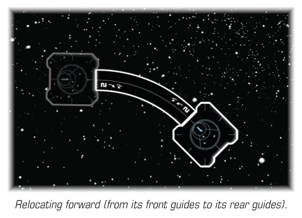

REMOTES
Remotes are devices that have initiative, agility, and hull values, and can be attacked. Ships can move through, overlap, or be at range 0 of remotes.
ATTACKING REMOTES
A remote can be declared as the defender. While attacking a remote, treat it as a ship, with the following exceptions and notes:
-
Effects that refer to “friendly ships” or "allied ships" do not apply to a remote.
-
Effects that refer to “enemy ships” only apply to a remote if the attacker is the source of the effect.
-
If a remote has printed arcs and center lines, these arcs extend from range 0–3. A ship can be in these arcs or zones as it would be with another ship.
-
If a remote does not have a midway line, a ship cannot be in front of, behind, or flanking it.
-
If a remote does not have any arcs, a ship cannot be in or outside of any of that remote’s arcs.
-
An attack made against a remote can be obstructed and range bonuses are applied to it as normal.
-
If a remote does not have specified size, it is neither smaller nor larger than a ship for the purposes of effects.
Damaging Remotes
If a remote suffers one or more / damage, deal that many facedown damage cards to it. If it has a number of damage cards greater than or equal to its hull value, it is destroyed. After a remote is destroyed, remove it from the play area and shuffle any damage cards assigned to it back into the damage deck. If the attack occurred at the same initiative as the remote’s initiative, it is removed after all effects at that initiative are resolved, per Simultaneous Fire.
Using Remotes
A remote resolves effects during the System Phase, activates during the Activation Phase, and engages during the Engagement Phase at its listed initiative value, resolving any effects specified on its card for these phases. During any other phase, it resolves any abilities listed on its remote card that apply during that phase. Additionally, the following apply to remotes:
-
A remote cannot perform actions or be assigned tokens except for locks.
-
A remote can be assigned markers or counters if an effect instructs it— place these on its remote card.
-
If an effect instructs a player to place that a remote on a ship card, pick it up and place it on the relevant ship card. It can be affected only by game effects that return it to the play area. Its damage cards are not removed.
-
Some devices cause damage to remotes, as described in their individual entries. If a device does not state that it affects remotes, it does not affect remotes.
Relocating Remotes
If an effect relocates a remote, its controlling player picks it up and places it in the new location as instructed by the effect. Additionally:
- An effect might instruct a player to relocate a remote forward using a specific template (or a choice of several templates). To do this, the player places the listed template at the remote's front guides, picks up the remote, and places the remote's rear guides at the other end of the template, similar to moving a ship.

- If a remote would be relocated such that any part of it is outside of the play area, it flees in the same manner as a ship, and is removed.